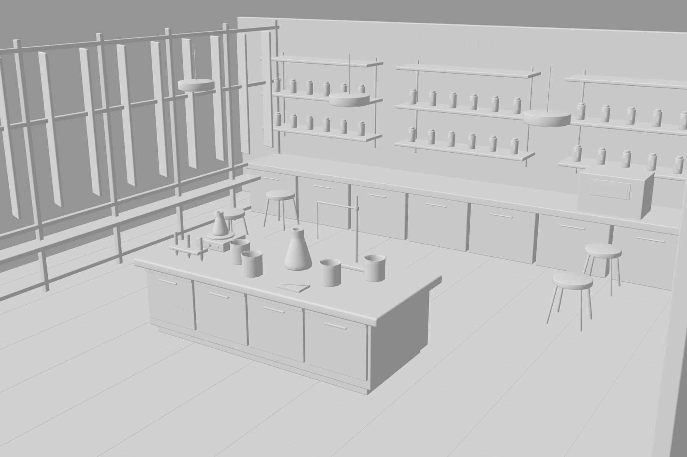
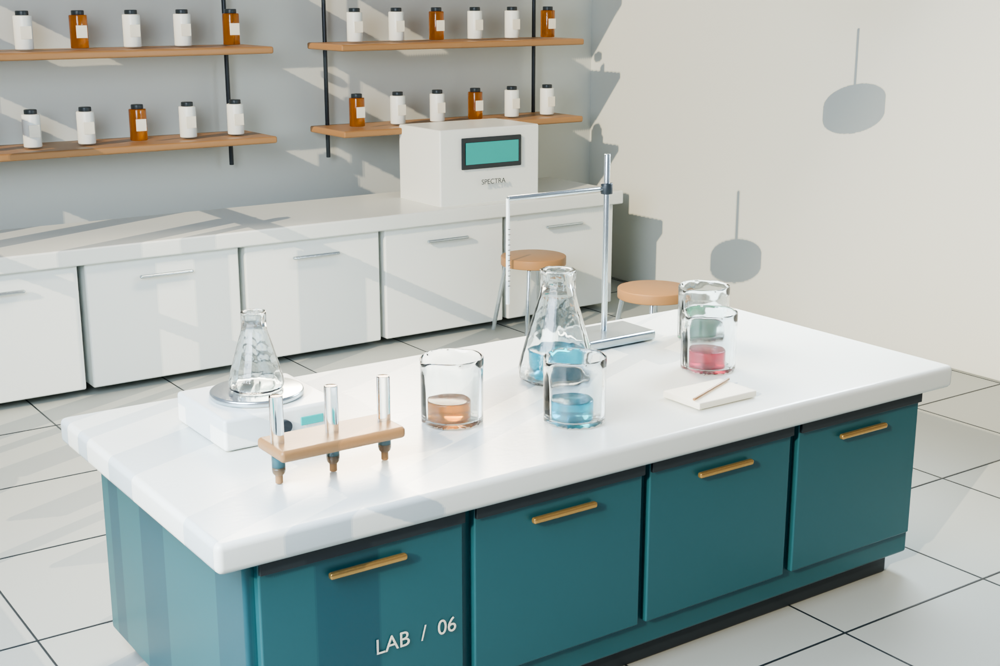
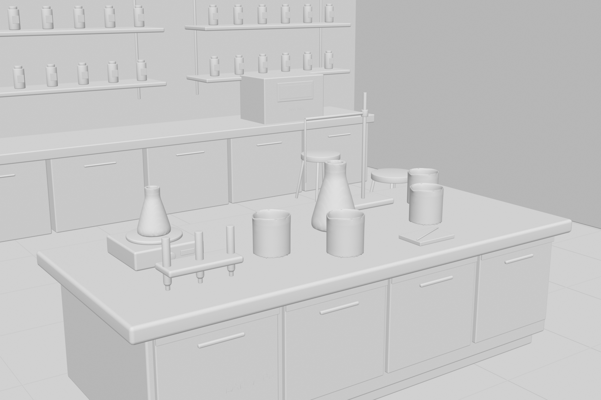

<!doctype html>
<html lang="zh-CN"><meta charset="utf-8"><meta name="viewport" content="width=device-width, initial-scale=1">
<title>实验室 · 混合渲染与白模</title>
<style>
*{box-sizing:border-box}body{margin:0;background:#101c20;color:#e8efed;font:16px/1.7 system-ui,"Microsoft YaHei",sans-serif}main{max-width:1380px;margin:auto;padding:54px 28px}small{letter-spacing:.18em;color:#a6c9c2}h1{font-size:clamp(28px,4vw,48px);line-height:1.2;font-weight:550;margin:16px 0}p{color:#b1c3c5;max-width:850px}section{margin-top:44px}h2{font-weight:500;font-size:23px}.pair{display:grid;grid-template-columns:1fr 1fr;gap:16px}figure{margin:0;background:#203036;border:1px solid #34474a;border-radius:8px;overflow:hidden}img{display:block;width:100%;height:auto}figcaption{padding:14px 18px;font-size:14px;color:#c5d6d3}a{color:#d2ece6}footer{margin-top:40px;border-top:1px solid #34474a;padding-top:20px;color:#9fb4b4;font-size:13px}@media(max-width:800px){.pair{grid-template-columns:1fr}main{padding:32px 16px}}
</style><main><small>MR LAB / RENDER STUDY</small>
<h1>实验室的光与材质</h1>
<p>两个视角，各一张级联阴影＋光线追踪成图与同机位白模。点击图片查看原始分辨率。独立离线场景，不改变 PC 实验模拟。</p>
<section><h2>01 / 实验室全景</h2><div class="pair">
<figure><a href="images/view01_hybrid.png"></a><figcaption>级联阴影＋光线追踪 · 1800 × 1200</figcaption></figure>
<figure><a href="images/view01_white.png"></a><figcaption>白模 · 同相机、同几何、基础法线明暗</figcaption></figure></div></section>
<section><h2>02 / 器皿近景</h2><div class="pair">
<figure><a href="images/view02_hybrid.png"></a><figcaption>级联阴影＋光线追踪 · 1800 × 1200</figcaption></figure>
<figure><a href="images/view02_white.png"></a><figcaption>白模 · 同相机、同几何、基础法线明暗</figcaption></figure></div></section>
<footer>4 级联 · 每级 2048² 深度贴图 · PCF 与级联过渡 · Cycles 路径追踪<br>太阳漫反射使用阴影贴图；区域光／环境光的反射、折射及间接光使用路径追踪。没有完整太阳焦散。<br><a href="README.md">实现说明与复现方法</a> · <a href="evidence/render_report.json">运行参数</a></footer>
</main></html>
